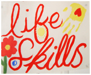

GCPHY
Accommodation Services
All referrals to Gold Coast Project for Homeless Youth’s accommodation services are taken through Lawson House. Phone 07 5564 8360. 
In urgent need of accommodation?
Lawson House is a seven bed residential house which offers 24 hour emergency youth worker support, for young people aged 16 to 18 years who are homeless or at risk of homelessness.
To be offered accommodation at Lawson House a young person needs to meet the following requirements:• be aged between 16 and 18 years of age be homeless or at risk of homelessness.
• agree to participate in Case Management by developing a Support Plan.
What can I expect from Lawson House?
• Learning life skills, i.e. cooking, cleaning, budgeting, laundry etc.• Having someone to talk to in confidence.
• 24 hour support from youth workers.
• Practical assistance in working toward individual goals.
• Obtaining information, advocacy and referrals to other services if needed, i.e. education, employment, doctors, Centrelink or counselling.
• Fun weekly activities i.e. Gym, BBQ outings, games and much more.
Transitional (Medium-term) accommodation.
Bannister House and Jessica Dunne Lodge are residential houses providing medium-term accommodation for young people 16 to 19 years of age who are enrolled in school or another training program, or who have a job. In general, young people enter the service though Lawson House and will transition to one of the medium term houses once a Case Management plan has been completed and the young person meets the following requirements:
• be aged between 16 and 19 years of age.• be involved in a regular activity such as School, Training, Work or an Education Course during the day.
• agree to participate in Case Management by developing a Support Plan.
• be willing to work toward independent living.
What can I expect from Bannister House or Jessica Dunne Lodge?
Bannister House provides stable and affordable accommodation where a youth worker will support and assist in the following areas:
• Learning life skills, i.e. cooking, cleaning, budgeting etc.• Having someone to talk to in confidence.
• Support and practical assistance in working toward individual goals.
• Practice in sharing accommodation.
• Provision of information, advocacy and referrals to other services if needed, i.e. education, employment or counselling.